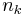

Algorithmus (K-Means-Clusteranalyse)
Die K-Means-Clusteranalyse verwendet die minimale Summe der Quadrate, um Beobachtungen zu den Gruppen zuzuweisen.
Eine Beobachtung, die einen oder mehrere fehlende Werte enthält wird vor der K-Means-Clusteranalyse ausgeschlossen.
Für eine Matrix X mit n Beobachtungen bei p Variablen können die anfänglichen Clusterzentren durch eine K x p-Matrix festgelegt oder aus der Matrix X mit einer vordefinierten Anzahl von Clustern gewählt werden.
- Anfängliche Clusterzentren aus Beobachtungen auswählen
- Die ersten K Beobachtungen werden Clusterzentren zugewiesen.
- Führen Sie für jede verbleibende Beobachtung eine Schleife aus, um zu sehen, ob sie aktuelle Clusterzentren ersetzen kann.
-
-
- Wenn die Distanz zwischen der Beobachtung und dem nahesten Clusterzentrum größer ist als die Distanz zwischen den beiden nahesten Clusterzentren (Cluster i und Cluster j), dann wird das Clusterzentrum von Cluster i oder j durch die Beobachtung ersetzt, abhängig davon, welches der Beobachtung näher ist.
- Wenn, andernfalls, die Distanz zwischen der Beobachtung und dem zweitnahesten Clusterzentrum größer ist als die kürzeste Distanz zwischen den nahesten Clusterzentrum und anderen Clusterzentren, dann wird das naheste Clusterzentrum durch die Beobachtung ersetzt.
- Dem nahesten Cluster Beobachtungen zuweisen
- Jede Beobachtung wird dem nahesten Cluster zugewiesen. Die Distanz zwischen einer Beobachtung und einem Cluster wird aus der euklidischen Distanz zwischen der Beobachtung und dem Clusterzentrum berechnet.
- Wenn die i-te beobachtung dem k-ten Cluster zugewiesen wird, wird die Distanz zwischen der Beobachtung und dem k-ten Cluster als korrigiert. Die Distanz zwischen der Beobachtung und anderen Clustern wird als korrigiert, wobei  und
 die Anzahl der Beobachtungen im k-ten und j-ten Cluster sind. Wenn die korrigierte Distanz zwischen der Beobachtung und dem l-ten Cluster minimal und ist, dann wird die Beobachtung dem l-ten Cluster zugewiesen anstatt dem k-ten Cluster.
die Anzahl der Beobachtungen im k-ten und j-ten Cluster sind. Wenn die korrigierte Distanz zwischen der Beobachtung und dem l-ten Cluster minimal und ist, dann wird die Beobachtung dem l-ten Cluster zugewiesen anstatt dem k-ten Cluster.
- Jedes Clusterzentrum wird dann als Mittelwert für Beobachtungen in jedem Cluster aktualisiert.
-
Die Summe der Quadrate innerhalb der Cluster ist:
- wobei es sich bei um die Reihe von Beobachtungen im k-ten Cluster handelt und die j-te Variable des Clusterzentrums für den k-ten Cluster ist.
- Wiederholen Sie mit Hilfe der aktualisierten Clusterzentren den Vorgang, weisen Sie jede Beobachtung zu und aktualisieren Sie die Clusterzentren. Die Iteration wird beendet, wenn die maximale Anzahl von Iterationen erreicht ist oder die Änderung der Summe der Quadrate innerhalb der Cluster in zwei aufeinander folgenden Iterationen kleiner ist als der Schwellenwert. Die aktualisierten Clusterzentren für die letzte Iteration werden Letzte Clusterzentren genannt.
- Standardmäßig liegt Origins maximale Anzahl von Iterationen bei 10.
-
Die euklidische Distanz wird erwendet, um die Distanz zwischen der i-ten Beobachtung und dem k-ten Cluster zu berechnen.
- Failed to parse (Missing texvc executable; please see math/README to configure.): d_{ik}=\sqrt{\sum_{j=1}^{p} (x_{ij}-\bar{x}_{kj})^2}